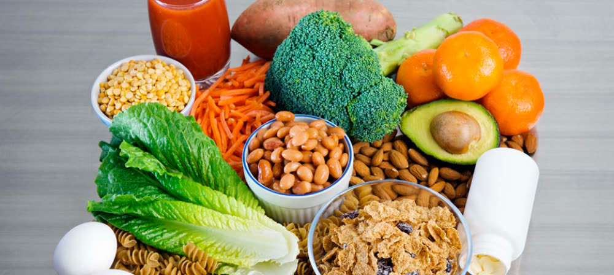
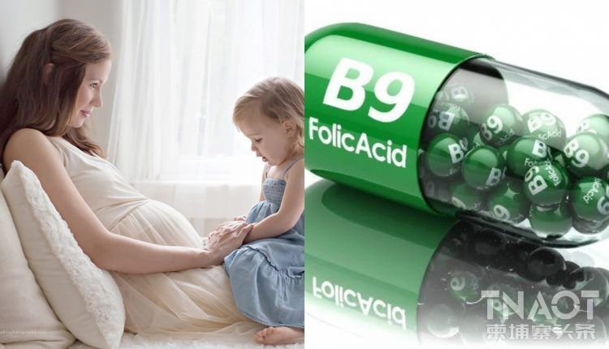

វីតាមីន B9 (folate) គឺជាវីតាមីនដ៏សំខាន់ដែលជួយរាងកាយរបស់អ្នកបង្កើតកោសិកាឈាមក្រហម និង DNA ដែលជាបណ្តុំនៃសារពាង្គកាយរបស់អ្នក។ វាមានសារៈសំខាន់ជាពិសេសសម្រាប់ការលូតលាស់ និងការអភិវឌ្ឍន៍ដែលមានសុខភាពល្អអំឡុងពេលមានផ្ទៃពោះ។ អាហារជាច្រើនប្រភេទមានផ្ទុកអាស៊ីតហ្វូលិក ឬបន្ថែម ប៉ុន្តែវានៅតែពិបាកក្នុងការទទួលបាន B9 គ្រប់គ្រាន់។
អាហារជាច្រើនប្រភេទមានផ្ទុកអាស៊ីតហ្វូលិក ឬបន្ថែម ប៉ុន្តែវានៅតែពិបាកក្នុងការទទួលបាន B9 គ្រប់គ្រាន់។ កង្វះ Folate ដែលជារឿងធម្មតាអាចនាំឱ្យមានផលវិបាកធ្ងន់ធ្ងរដូចជា ពិការភាពពីកំណើត និងភាពស្លេកស្លាំង។ ក្នុងករណីខ្លះ អ្នកផ្តល់សេវាថែទាំសុខភាពរបស់អ្នកអាចណែនាំអាហារបំប៉នបន្ថែម។
អ្នកឯកទេសខាងចំណីអាហារ Julia Zumpano, RD និយាយថា "កម្រិតវីតាមីន B9 អាចជាការពិបាកក្នុងការរក្សា ដូច្នេះវាជាការសំខាន់ណាស់ដែលត្រូវដឹងថាតើអាហារអ្វីខ្លះដែលអ្នកអាចងាកមករកបាន ដើម្បីបំពេញតម្រូវការរបស់អ្នកបានកាន់តែប្រសើរឡើង"។ "ហើយប្រសិនបើអ្នកមានផ្ទៃពោះ អាហារបំប៉នអាស៊ីតហ្វូលិកតែងតែចាំបាច់សម្រាប់សុខភាព និងសុខុមាលភាពរបស់ទារក"។

+ តើវីតាមីន B9 ជាអ្វី?
វីតាមីន B9 គឺជាវីតាមីនមួយក្នុងចំណោមវីតាមីន B (B-complex) ចំនួនប្រាំបី ដែលជួយឱ្យរាងកាយរបស់អ្នកផ្លាស់ប្តូរអាហារ (កាបូអ៊ីដ្រាត) ទៅជាឥន្ធនៈ (គ្លុយកូស) ដើម្បីផលិតថាមពល។ អ្នកត្រូវការ B9 សម្រាប់សុខភាពថ្លើម ស្បែក សក់ និងភ្នែករបស់អ្នក និងដើម្បីឱ្យប្រព័ន្ធសរសៃប្រសាទរបស់អ្នកដំណើរការបានត្រឹមត្រូវ។
សារធាតុចិញ្ចឹមសំខាន់នេះគឺរលាយក្នុងទឹក (មានន័យថាវារលាយក្នុងទឹក)។ វាបំបែកយ៉ាងលឿនក្នុងខ្លួនអ្នក ហើយបំណែកលើសនៅក្នុងទឹកនោម ឬលាមករបស់អ្នក។
ដំណឹងល្អគឺ នេះមានន័យថាវាទំនងជាតិចក្នុងការឈានដល់កម្រិតពុល (គ្រោះថ្នាក់) ក្នុងខ្លួនរបស់អ្នក។ (ប៉ុន្តែត្រូវដឹងថា វាអាចទៅរួចក្នុងការទទួលទានអាស៊ីតហ្វូលិកច្រើនពេក ដែលអាចបង្កគ្រោះថ្នាក់ដល់រាងកាយរបស់អ្នកតាមពេលវេលា។)
ដំណឹងអាក្រក់គឺថា វាអាចធ្វើឱ្យអ្នកកាន់តែពិបាកក្នុងការថែរក្សា B9 ឱ្យបានគ្រប់គ្រាន់នៅក្នុងខ្លួនរបស់អ្នក និងបំពេញតាមបរិមាណដែលបានណែនាំប្រចាំថ្ងៃដោយមិនប្រើថ្នាំគ្រាប់។
Zumpano ធានាឡើងវិញថា "ការកើនឡើងនៃការប្រើប្រាស់របស់អ្នកគឺអាចធ្វើទៅបាន ប្រសិនបើអ្នកដឹងពីអ្វីដែលត្រូវរកមើល ហើយអាចងាយស្រួលជាងអ្វីដែលអ្នករំពឹងទុក។"

+ Folate vs. folic acidbr
ពាក្យ អាស៊ីត folate និងអាស៊ីត folic ជារឿយៗត្រូវបានប្រើប្រាស់ជំនួសគ្នា ប៉ុន្តែតាមពិតគឺជាទម្រង់ផ្សេងគ្នានៃវីតាមីន B9 ។
ប្រភេទសំខាន់បីគឺ៖
• Folate កើតឡើងដោយធម្មជាតិនៅក្នុងអាហារ ហើយសំដៅលើគ្រប់ទម្រង់នៃវីតាមីន B9 រួមទាំងអាស៊ីត folic ផងដែរ។
• អាស៊ីត folic គឺជាទម្រង់សំយោគ (សិប្បនិម្មិត) នៃ B9 ដែលមាននៅក្នុងអាហារបំប៉ន ។ ក្នុងឆ្នាំ 1998 សហរដ្ឋអាមេរិកតម្រូវឱ្យបន្ថែមអាស៊ីត folic ទៅក្នុងធញ្ញជាតិមួយចំនួន (អង្ករ នំបុ័ង ប៉ាស្តា និងធញ្ញជាតិមួយចំនួន) ដើម្បីធានាបាននូវការទទួលទានសាធារណៈឱ្យបានគ្រប់គ្រាន់។ រាងកាយរបស់អ្នកត្រូវការផ្លាស់ប្តូរ (បំប្លែង) អាស៊ីត folic ទៅជាទម្រង់មួយផ្សេងទៀតនៃ folate មុនពេលវាអាចត្រូវបានប្រើសម្រាប់អាហារូបត្ថម្ភ។
• Methylfolate (5-MTHF) គឺជាទម្រង់ធម្មជាតិ និងងាយស្រួលរំលាយនៃអាហារបំប៉នវីតាមីន B9 ជាងអាស៊ីត folic ។ រាងកាយរបស់អ្នកអាចប្រើប្រភេទ folate នេះភ្លាមៗ។